Christophe Delcourt • Lycée Marie Rivier • 2026–2027
TERMINALE EE • RÉVISION
Des conditions à la commande
Réviser la logique qui permet de commander un éclairage, un chauffage ou une ventilation. Reconnaître les portes dans les conventions européenne IEC et américaine ANSI/IEEE, puis vérifier que la commande répond aux conditions choisies.
Une variable représente une condition vraie ou fausse.
Définir le sens des entrées
Une mesure devient une condition : A = 1 peut signifier « la température dépasse le seuil choisi ». Une fonction logique calcule une sortie à partir des entrées.
Les états 0 et 1 ne correspondent pas automatiquement à 0 V et 1 V : leur sens est défini pour chaque signal.
Exemple d’éclairage automatique
P = 1 : présence détectée. N = 1 : luminosité insuffisante. On commande l’éclairage seulement si les deux conditions sont réunies.
L = P·N
Pour P = 1 et N = 0, L = 0.
Une table complète à n entrées contient 2n lignes. Deux entrées donnent 4 combinaisons ; trois entrées, 8 ; quatre entrées, 16.
Deux conventions, mêmes fonctions
2. Les symboles des six portes
Entrées à gauche, sortie S à droite. NON possède une seule entrée ; les cinq autres portes sont représentées à deux entrées.
NON / NOTS = ¬A
Inverse la valeur de A.
Européen IEC
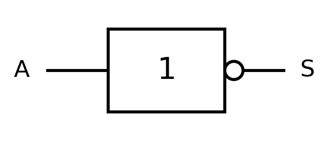
Américain ANSI/IEEE
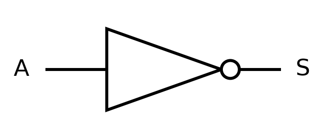
ET / ANDS = A·B
Vaut 1 uniquement si A et B valent 1.
Européen IEC
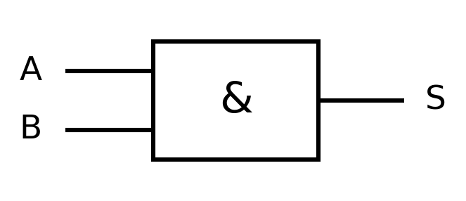
Américain ANSI/IEEE
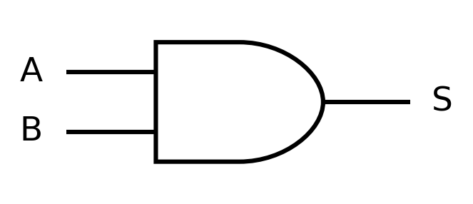
OU / ORS = A+B
Vaut 1 si au moins une entrée vaut 1, y compris 11.
Européen IEC
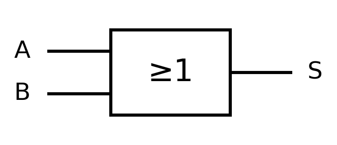
Américain ANSI/IEEE
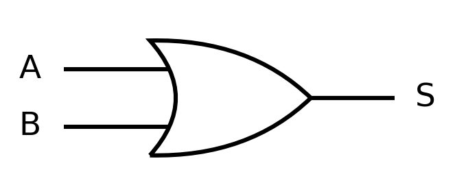
NON-ET / NANDS = ¬(A·B)
Inverse la sortie de la porte ET.
Européen IEC
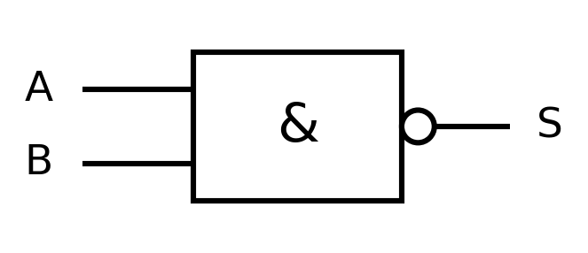
Américain ANSI/IEEE
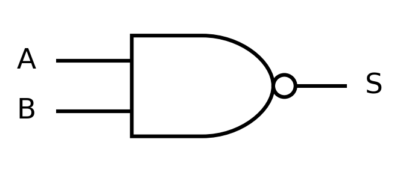
NON-OU / NORS = ¬(A+B)
Inverse la sortie de la porte OU.
Européen IEC
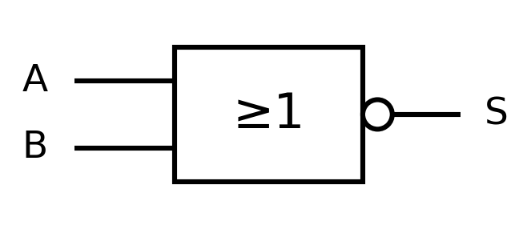
Américain ANSI/IEEE
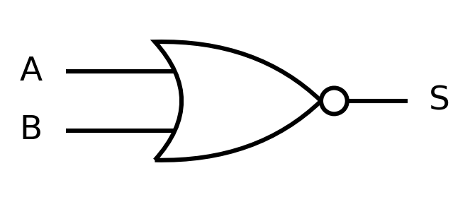
OU exclusif / XORS = A⊕B
Vaut 1 lorsque les deux entrées sont différentes.
Européen IEC
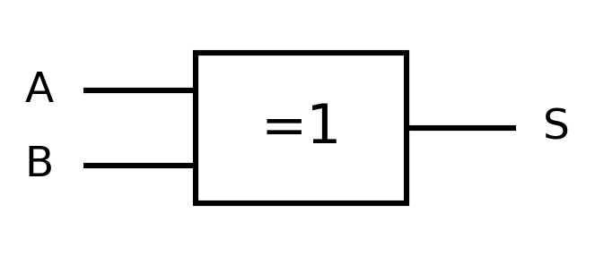
Américain ANSI/IEEE
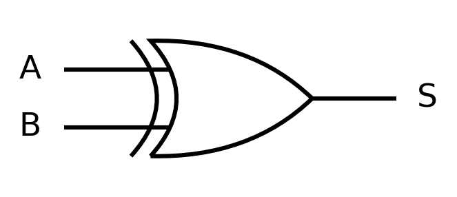
& indique ET ; ≥1 indique OU ; =1 indique XOR à deux entrées. Une bulle en sortie inverse le résultat. Le symbole américain XOR comporte un arc supplémentaire du côté des entrées.
Les dessins reprennent les fonctions et formes présentées dans les fiches techniques officielles Nexperia, diagrammes fonctionnels page 2. Les références sont en fin de cours.
Manipulation
3. Tester les sorties
Coche une entrée pour la faire passer à 1. Compare notamment OU et XOR pour A = B = 1.
NON A1ET0OU0NAND1NOR1XOR0
A = 0, B = 0 : ET = 0, OU = 0, XOR = 0.
Table de vérité complète à deux entrées
A
B
¬A
A·B
A+B
¬(A·B)
¬(A+B)
A⊕B
0
0
1
0
0
1
1
0
0
1
1
0
1
1
0
1
1
0
0
0
1
1
0
1
1
1
0
1
1
0
0
0
Application EE
4. Commander une ventilation
Exemple pédagogique : un défaut bloque la commande.
A = 1 : le seuil de température est dépassé. B = 1 : la commande forcée est active. C = 1 : un défaut est détecté. On commande la ventilation si A ou B vaut 1, et seulement en absence de défaut.
F = (A+B)·¬C
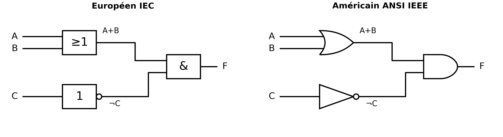
La même fonction, dessinée dans les deux conventions.
A+B = 0¬C = 1Commande F = 0
F = 0 : aucune demande de ventilation.
Méthode
5. Calculer et simplifier
Priorités : parenthèses → NON → ET → OU. Avec XOR, NAND ou NOR dans une expression composée, ajoute des parenthèses pour rendre le calcul sans ambiguïté.
F = ¬A+B·C se lit (¬A) OU (B ET C). Pour A = 0, B = 1 et C = 0 : ¬A = 1, B·C = 0, donc F = 1.
Lois de Boole
Propriété
Identités
Commutativité
A+B = B+A ; A·B = B·A
Associativité
(A+B)+C = A+(B+C) ; (A·B)·C = A·(B·C)
Neutre et absorbant
A+0 = A ; A·1 = A ; A+1 = 1 ; A·0 = 0
Idempotence
A+A = A ; A·A = A
Complément et double négation
A+¬A = 1 ; A·¬A = 0 ; ¬(¬A) = A
Absorption
A+A·B = A ; A·(A+B) = A
Distributivité
A·(B+C) = A·B+A·C ; A+B·C = (A+B)·(A+C)
Lois de De Morgan
¬(A·B) = ¬A+¬B
¬(A+B) = ¬A·¬B
Échanger ET et OU, puis inverser chaque terme.
Exemple de réduction
A·B+A·¬B = A·(B+¬B) = A·1 = A.
On factorise A, puis on applique la complémentarité et l’élément neutre.
Une simplification correcte conserve la sortie pour toutes les combinaisons d’entrées.
Chauffage : D = 1 signifie « demande présente » et X = 1 « défaut détecté ». La commande est C = D·¬X. Pour D = 1 et X = 1, C = 0.
Révision du cours fourni
6. Utiliser une carte de Karnaugh
Les lignes et colonnes suivent l’ordre Gray 00, 01, 11, 10. Deux cases voisines diffèrent d’une seule variable ; les bords opposés sont aussi voisins.
Reporter les valeurs de la table de vérité.
Former les plus grands groupes rectangulaires de 1, 2, 4, 8 ou 16 cases valant 1.
Couvrir tous les 1 ; un 1 peut appartenir à plusieurs groupes.
Garder les variables constantes dans chaque groupe, directes pour 1 ou inversées pour 0.
Réunir les termes par OU, puis vérifier le résultat.
À trois variables, les mintermes m(1, 3, 5, 7) ont tous C = 1. Ils forment un groupe de quatre : F = C.
Exemple à quatre variables : H(A,B,C,D)
H vaut 1 pour les mintermes 0, 2, 8, 10, 12, 13, 14 et 15. A est le bit de poids fort ; D, le bit de poids faible.
AB en lignes, CD en colonnes
AB / CD
00
01
11
10
00
1
0
0
1
01
0
0
0
0
11
1
1
1
1
10
1
0
0
1
Les quatre coins donnent ¬B·¬D. La ligne AB = 11 donne A·B. C disparaît des deux groupes.
H = ¬B·¬D+A·B
Expression → circuit
7. Construire avec les portes
Commencer par les opérations entre parenthèses, créer une porte par opération et relier les sorties intermédiaires. Comparer ensuite la sortie du circuit et l’expression sur toutes les lignes de la table.
NAND est une porte universelle
Fonction
Équivalent avec NAND
NON A
¬A = NAND(A,A)
A ET B
A·B = NAND(NAND(A,B), NAND(A,B))
A OU B
A+B = NAND(NAND(A,A), NAND(B,B))
Entraînement
8. Vérifier mes connaissances
Les quatre exercices sont repris dans la fiche élève, avec le barème du support sur 20.
Exercice 1 — Ventilation /4
Pour F = (A+B)·¬C, complète les sorties. Dans la fiche Word ou PDF, calcule aussi les colonnes intermédiaires A+B et ¬C.
Exercice 2 — Simplifications justifiées /5
Simplifie et cite les propriétés utilisées.
P = A·B+A·¬B
Q = (A+B)·(A+¬B)
R = A+¬A·B
Afficher la correction
P = A : factorisation, complémentarité, élément neutre (/2).
Q = A : Q = A+B·¬B = A+0 = A, par distributivité de OU sur ET lue en sens inverse (/2).
R = A+B : R = (A+¬A)·(A+B) = 1·(A+B) (/1).
Exercice 3 — Karnaugh /6
Pour H(A,B,C,D) valant 1 aux mintermes 0, 2, 8, 10, 12, 13, 14 et 15, complète la carte vide de la fiche élève, forme les groupes et trouve l’expression minimale.